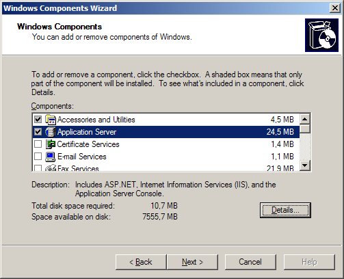
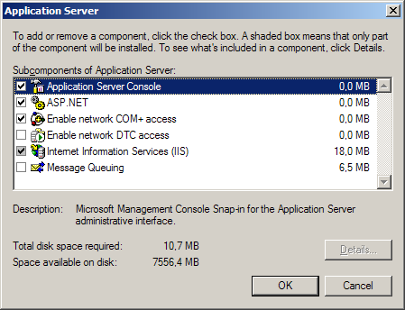
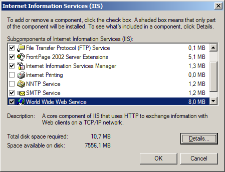
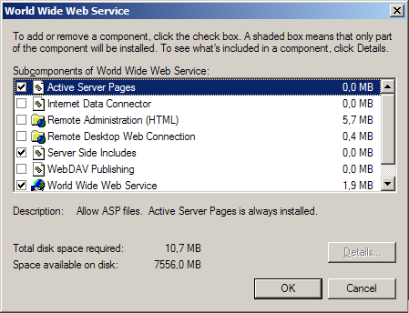
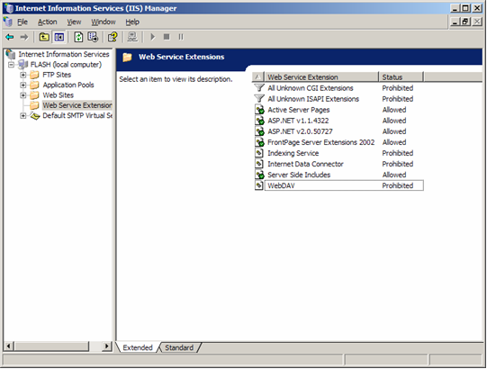
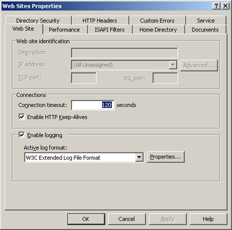
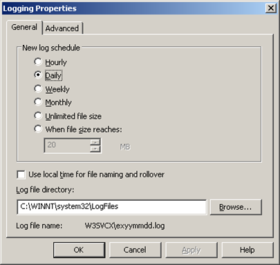

IIS 6.0 Web Server Installation and Configuration
Translations:
Installing Internet Information Services
From IIS distribution you should install at least Web Server, because all WebsitePanel applications are ASP.NET web applications and require IIS to run.
To install Internet Information Services components:
- Open "Control Panel -> Add or Remove Programs"
- Click "Add/Remove Windows Components" button
- Tick "Application Server" checkbox
 - Click "Details..." button
- Make sure "ASP.NET" checkbox is ticked.
 - Tick "Internet Information Services (IIS)" checkbox and click "Details..." button.
- Make sure "Common Files" is selected.
 - If you are planning to use Microsoft FTP Server, tick "File Transfer Protocol (FTP) Service" checkbox.
- If you are planning to allow your customer use FrontPage Server Extensions (FPSE) make sure "FrontPage 2002 Server Extensions" checkbox is selected.
- Tick "Internet Information Services Manager" checkbox. It will allow you managing IIS through MMC snap-in.
- If you are planning to allow your customers sending e-mail messages from their scripts tick "SMTP Service" checkbox.
- Tick "World Wide Web Service" checkbox and click "Details..." button.
 - If you are planning to allow your customers running ASP 3.0 application tick "Active Server Pages" checkbox. Note: ASP 3.0 is not obligatory for WebsitePanel operation.
- The most of ASP 3.0 pages use "Server Side Includes" to include code snippets, so it makes sense to tick this checkbox too.
- Tick "World Wide Web Service" checkbox.
- Click "OK" buttons and return to the root list.
Configuring IIS Web Services
- Open "Internet Information Services (IIS) Manager" snap-in (Click "Start -> Administrative Tools -> Internet Information Services (IIS) Manager").
- Click on "Web Service Extensions" node and ensure that at least "ASP.NET v1.1.4322" is "Allowed". You might also allow "Active Server Pages", "FrontPage Server Extensions 2002" and "Server Side Includes"
 - Right-click on "Web Sites" node and select "Properties". This dialog allows specifying properties that will be applied by default for all newly created web sites. Of course, they can be overridden later at any time for individual web sites
 - Tick "Enable logging" checkbox and make sure "W3C Extended Log File Format" is selected. Enabling of logging in Web server will provide you with detailed Web bandwidth statistics in WebsitePanel and advanced web statistics in AWStats (see below).
- Click "Properties..." button.
 - Make sure your "General" settings selection is as on the picture above.
- Click "Advanced" tab

- Tick all the checkboxes. Eventually, it will increase the overall size of the produced logs, but it will also give you more detailed advanced reports.
- Click "OK" to save settings and close the dialog.
- On "Web Sites Properties" dialog you may also click "Documents" tab to specify additional or change existing default documents. If you are planning to provide PHP hosting it makes sense to expand the list with such documents as "index.php", "index.html" and others.
- Click "OK" button to save your changes and close "Web Sites Properties" dialog.